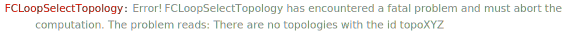

FCLoopFromGLI[exp, topologies] replaces GLIs in exp with the corresponding loop integrals in the FeynAmpDenominator notation according to the information provided in topologies.
Overview, FCTopology, GLI, FCLoopValidTopologyQ.
topos = {
FCTopology["topoBox1L", {FAD[{q, m0}], FAD[{q + p1, m1}], FAD[{q + p2, m2}], FAD[{q + p2, m3}]},
{q}, {p1, p2, p3}, {}, {}],
FCTopology["topoTad2L", {FAD[{q1, m1}], FAD[{q2, m2}], FAD[{q1 - q2, 0}]}, {q1, q2}, {}, {}, {}]}\left\{\text{FCTopology}\left(\text{topoBox1L},\left\{\frac{1}{q^2-\text{m0}^2},\frac{1}{(\text{p1}+q)^2-\text{m1}^2},\frac{1}{(\text{p2}+q)^2-\text{m2}^2},\frac{1}{(\text{p2}+q)^2-\text{m3}^2}\right\},\{q\},\{\text{p1},\text{p2},\text{p3}\},\{\},\{\}\right),\text{FCTopology}\left(\text{topoTad2L},\left\{\frac{1}{\text{q1}^2-\text{m1}^2},\frac{1}{\text{q2}^2-\text{m2}^2},\frac{1}{(\text{q1}-\text{q2})^2}\right\},\{\text{q1},\text{q2}\},\{\},\{\},\{\}\right)\right\}
exp = a1 GLI["topoBox1L", {1, 1, 1, 1}] + a2 GLI["topoTad2L", {1, 2, 2}]\text{a1} G^{\text{topoBox1L}}(1,1,1,1)+\text{a2} G^{\text{topoTad2L}}(1,2,2)
FCLoopFromGLI[exp, topos]\frac{\text{a1}}{\left(q^2-\text{m0}^2\right) \left((\text{p1}+q)^2-\text{m1}^2\right) \left((\text{p2}+q)^2-\text{m2}^2\right) \left((\text{p2}+q)^2-\text{m3}^2\right)}+\frac{\text{a2}}{\left(\text{q1}^2-\text{m1}^2\right) \left(\text{q2}^2-\text{m2}^2\right)^2 (\text{q1}-\text{q2})^4}
Notice that it is necessary to specify all topologies present in exp. The function will not accept GLIs defined for unknown topologies
FCLoopFromGLI[GLI["topoXYZ", {1, 1, 1, 1, 1}], topos]
\text{\$Aborted}
FCLoopFromGLI can also handle products of GLIs (currently only for standalone integrals or lists of integrals but not for amplitudes). In this case it will automatically introduce dummy names for the loop momenta.
FCLoopFromGLI[GLI["topoBox1L", {1, 0, 1, 0}] GLI["topoBox1L", {0, 1, 0, 1}], topos]\frac{1}{\left(\text{FCGV}(\text{lmom21})^2-\text{m0}^2\right) \left((\text{p1}+\text{FCGV}(\text{lmom11}))^2-\text{m1}^2\right) \left((\text{p2}+\text{FCGV}(\text{lmom11}))^2-\text{m3}^2\right) \left((\text{p2}+\text{FCGV}(\text{lmom21}))^2-\text{m2}^2\right)}
You can customize the naming scheme for the momenta via the LoopMomentum option. The first argument gives the number of the loop integral, while the second corresponds to a particular loop momentum this integral depends on.
SelectNotFree[Options[FCLoopFromGLI], LoopMomenta]\{\text{LoopMomenta}\to (\{\text{FeynCalc$\grave{ }$FCLoopFromGLI$\grave{ }$Private$\grave{ }$x},\text{FeynCalc$\grave{ }$FCLoopFromGLI$\grave{ }$Private$\grave{ }$y}\}\to \;\text{FCGV}(\text{lmom}<>\text{ToString}[\text{FeynCalc$\grave{ }$FCLoopFromGLI$\grave{ }$Private$\grave{ }$x}]<>\text{ToString}[\text{FeynCalc$\grave{ }$FCLoopFromGLI$\grave{ }$Private$\grave{ }$y}]))\}
FCLoopFromGLI[GLI["topoBox1L", {1, 0, 1, 0}] GLI["topoBox1L", {0, 1, 0, 1}], topos,
LoopMomenta -> Function[{x, y}, "p" <> ToString[x] <> ToString[x]]]\frac{1}{\left(\text{p22}^2-\text{m0}^2\right) \left((\text{p11}+\text{p1})^2-\text{m1}^2\right) \left((\text{p22}+\text{p2})^2-\text{m2}^2\right) \left((\text{p11}+\text{p2})^2-\text{m3}^2\right)}
In general, FCLoopFromGLI can change the ordering of propagators inside FeynAmpDenominator, as compared to the their ordering inside FCTopology. This is because by default it calls FeynAmpDenominatorCombine. Ordering may also change when applying FeynAmpDenominatorSimplify. You want the ordering to remain unchanged, the following should help
FCLoopFromGLI[exp, topos, FeynAmpDenominatorCombine -> False, List -> FeynAmpDenominator]\frac{\text{a1}}{\left(q^2-\text{m0}^2\right).\left((\text{p1}+q)^2-\text{m1}^2\right).\left((\text{p2}+q)^2-\text{m2}^2\right).\left((\text{p2}+q)^2-\text{m3}^2\right)}+\frac{\text{a2}}{\left(\text{q1}^2-\text{m1}^2\right).\left(\text{q2}^2-\text{m2}^2\right)^2.(\text{q1}-\text{q2})^4}